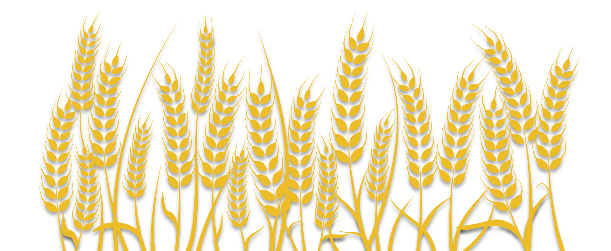
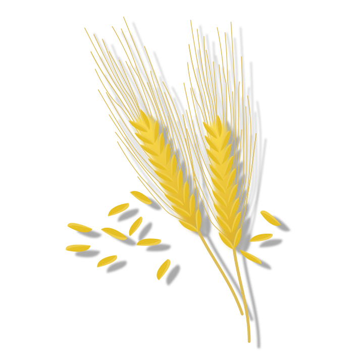
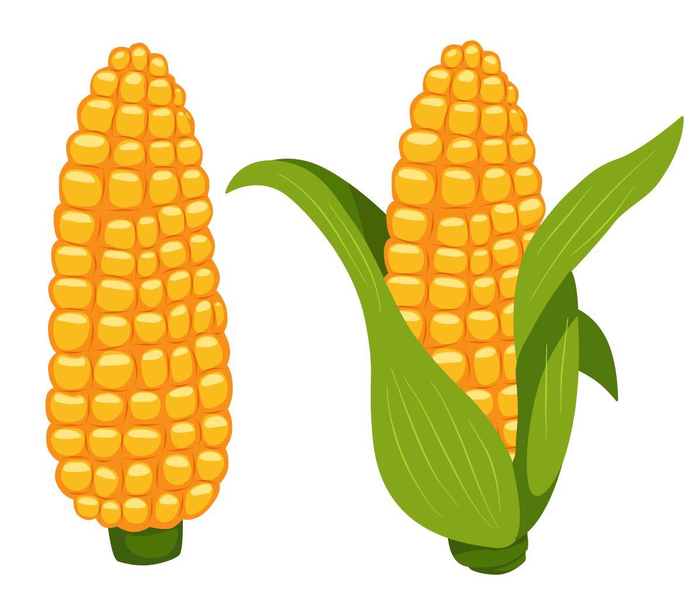

Пшениця
Рід одно та дворічних трав сімейства злаків, одна з найважливіших зернових культур. Борошно, що одержується з зерен, йде на випічку білого хліба та виробництва харчових продуктів. Відходи борошномельного виробництва служать кормом худобі та свійської птиці, також застосовується в якості сировини для промисловості.
В Україні пшениця належить до традиційних культур, що вирощується аграріями. Від неї залежить основа продовольчої безпеки та формування експортного потенціалу держави. Вирощують її як сільськогосподарські підприємства, так і населення. При цьому частка агроформувань у структурі виробництва становить майже 81%. Своєю чергою, частка сільського населення займає близько 19–20% від загального обсягу збіжжя цієї зернової культури.
Пшениця є провідною зерновою культурою у багатьох регіонах світу та одним з основних продуктів харчування на півночі Китаю, у деяких частинах Індії та Японії. У багатьох близькосхідних та північноафриканських країнах та на півдні Південної Америки. Основними виробниками є Україна, Китай, США.
При вирощуванні цієї культури в Україні здебільшого використовуються сорти, виведені науковцями Миронівського інституту пшениці імені В. М. Ремесла НААН України. Загалом більш ніж за 100-річний період діяльності цього інституту було створено та передано на сортовипробування 146 сортів пшениці озимої м’якої, 28 сортів пшениці ярої м’якої та 5 сортів пшениці ярої твердої. Ячмінь
Ячмінь належить до найдавніших культурних рослин. Як і пшениця, він був окультурений в епоху неолітичної революції на Близькому Сході 10 тис. років тому. В Європу поширився з Малої Азії у IV—III тисячоліттях до н. е. У той же період, а можливо і раніше, ячмінь почали вирощувати на території сучасної України. У країнах Америки це порівняно нова культура, яку завезли переселенці з Європи у XVI—XVIII століттях.
Ячмінь використовують як корм для тварин, для виготовлення круп, борошна, а також як сировину для пивоварної промисловості. З цієї рослини виробляють перлову (очишене від висівок) й ячневу (подрібнене зерно без висівок) крупи, з яких варять каші. Ця культура є важливим кормовим зерном у багатьох районах світу, які не підходять для вирощування кукурудзи за кліматом, особливо в регіонах північної та східної Європи.
Сортові ресурси ячменю: Станом на 2020 рік до Державного реєстру сортів рослин, придатних для поширення в Україні, було занесено 206 сортів ячменю звичайного, серед них 156 сортів ячменю ярого і 50 озимого. Серед сортів ячменю ярого 88 сортів за напрямом використання належать до пивоварних. Кукурудза
Це овочева культура, яка потрапила до Європи завдяки відкриттю Америки. У Південній Америці вона була відома за 2 тисячі років до появи там європейців. Зараз у країнах Центральної й Латинської Америки кукурудза є основним продуктом харчування.
Ця культура є однією з основних продовольчих хлібних зернових культур у світі. Зерно використовують для виробництва борошна, крупи, олії, кукурудзяних пластівців, а також у крохмало-патоковій, пивоварній, спиртовій галузях.
Є важливою кормовою культурою. Окрім зерна на корм сільськогосподарським тваринам використовують зелену масу на силос з незрілими подрібненими качанами. Зі стебел, стрижнів і обгорток качанів виробляють клей, фарби, лак, папір, лінолеум.
Рослина посідає третє місце у світовому вирощуванні після пшениці та рису. Найбільше кукурудзи вирощують такі країни як, США, Україна, Китай, Європейський Союз і Бразилія. В Україні популярні такі сорти: Рання золота 401, Кубанська консервна 148, Ароматна, Гібрид Ауріка, Гібрид Акорд 72 і Зоря 123.
Кукурудза є модельно класичним генетичним об'єктом. Розпочаті в 19-20ст. генетичні дослідження кукурудзи, сприяли вагомому поліпшенню даної культури, а також стали основою для розвитку теоретичної та прикладної генетики рослин. Вперше здійснені на кукурудзі розробки, були перенесені на інші культури, що сприяло підвищенню загального рівня генетичних досліджень і селекційних технологій. У Національному центрі генетичних ресурсів рослин України Інституту рослинництва ім. В. Я. Юр'єва сформована та зареєстрована базова колекція кукурудзи, яка включає 4987 зразків, в тому числі 892 сорти, 191 синтетична популяція і 3904 самозапилених ліній.
Соняшник
Молода сільськогосподарська культура. Як олійну культуру його вирощують близько 150 років. Батьківщиною соняшнику вважають південно-західну частину Північної Америки. У Європу соняшник завезли іспанці в 1510 році, назвавши його перуанською хризантемою. Спочатку соняшник поширився як декоративна і городня культура.
В Україну завезено у XVIII столітті. Медоносні бджоли збирають з квіток однорічного соняшника нектар та пилок. Є важливою медоносною культурою, що забезпечує головний медозбір, а також поповнення запасів пилку у гніздах бджолиних сімей.
Світове виробництво насіння соняшнику постійно зростає: урожай в поточному маркетинговому році прогнозовано має перетнути відмітку в 54 мільйонів тонн зерна. На цей об’єм соняшнику припадає близько 10% виробництва сирої рослинної олії, що робить його третьою за важливістю олійною культурою після сої та ріпаку. Україна, Європейський Союз та Аргентина є основними країнами, що вирощують насіння цієї культури. Україна є світовим лідером по кількості отриманого врожаю та виготовлення олійної продукції. За підрахунками вирощує близько половини світового насіння соняшнику та займає перше місце по виготовленні олії. Насіння соняшнику також використовуються для виробництва біодизельного палива.